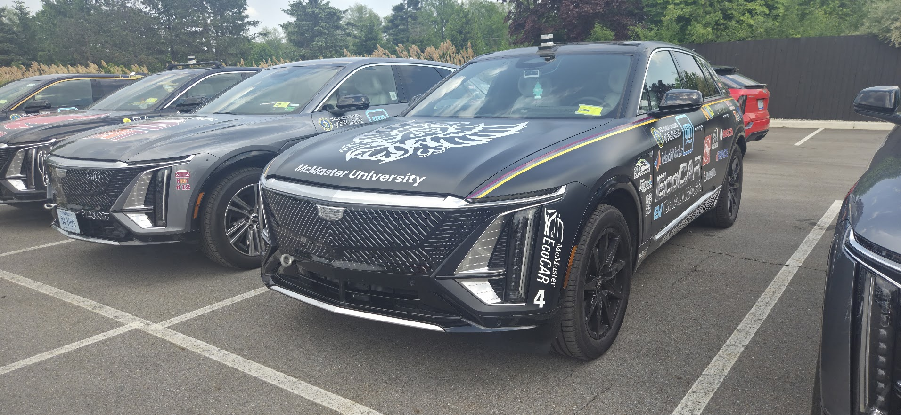

VIEW PHOTOS
001
↗
SRM Powertrain Integration — Cadillac LYRIQ
Integrated a first of its kind Switched-Reluctance Motor EV powertrain into the rear of a production Cadillac LYRIQ as part of the DOE EcoCAR EV Challenge. Led powertrain integration, FEA, and cross-team coordination across an 8-month delivery window. Pictured is our car at the end of the over-the-road event. Only 5 of 13 vehicles competed, and we completed it with full points!
PLATFORM
AWD Cadillac LYRIQ (AAM IM front, Enedym SRM rear)
TOOLS
Siemens NX, Altair HyperWorks, FEA
OUTCOME
2nd place, EcoCAR Year 4